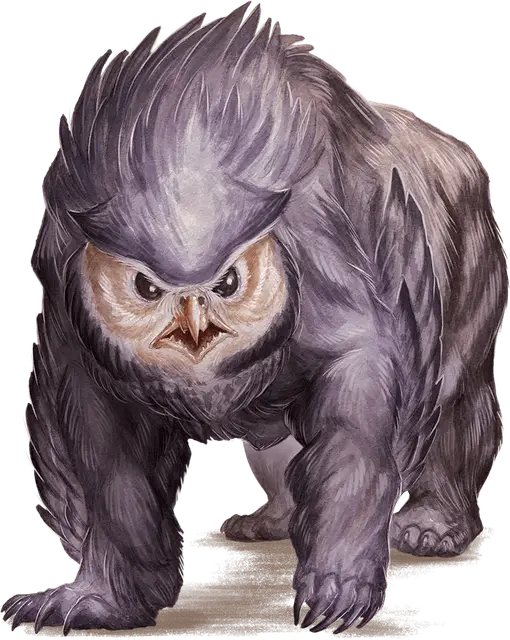

Совомед
Owlbear
Большой Монстр, без мировоззрения

Класс Доспеха 13 (природный доспех)
Хиты 59 (7к10 + 21)
Скорость 40 футов
| мод | спас | ||
|---|---|---|---|
| СИЛ | 20 | +5 | +5 |
| ЛОВ | 12 | +1 | +1 |
| ТЕЛ | 17 | +3 | +3 |
| мод | спас | ||
|---|---|---|---|
| ИНТ | 3 | −4 | −4 |
| МДР | 12 | +1 | +1 |
| ХАР | 7 | −2 | −2 |
Навыки Восприятие +3
Чувства тёмное зрение 60 футов, пассивное Восприятие 13
Опасность 3 (700 опыта)
Бонус мастерства +2
Среда обитания Лес
Особенности
Острое зрение и тонкий нюх. Совомед совершает с преимуществом проверки Мудрости (Восприятие), полагающиеся на зрение или нюх.
Действия
Мультиатака. Совомед совершает две атаки: одну Клювом, другую Когтями.
Клюв. Рукопашная атака оружием: +7 к попаданию, досягаемость 5 футов, одна цель. Попадание: Колющий урон 10 (1к10 + 5).
Когти. Рукопашная атака оружием: +7 к попаданию, досягаемость 5 футов, одна цель. Попадание: Рубящий урон 14 (2к8 + 5).
Описание
«ЕДИНСТВЕННОЕ, ЧТО ХОРОШО В СОВОМЕДАХ, ЭТО ТО, ЧТО ВОЛШЕБНИК, ИХ СОЗДАВШИЙ, СКОРЕЕ ВСЕГО, УЖЕ МЕРТВ».
— ЗАРШЕЛЬ ТЕНЕВРАН, ГНОМИЙ ПРОФЕССОР ТРАНСМУТАЦИОННОЙ НАУКИ В УНИВЕРСИТЕТЕ МОРГРЕЙВА
Крик совомеда эхом разносится по темным рощам и укрытым ночью лесам, разрывая тишину и предвещая смерть жертвам этого зверя. Перья покрывают крепкую, косматую шкуру его медвежьего тела, а огромные, как блюдца, круглые зрачки гневно сверкают на совиной голове.
Смертоносная свирепость. Репутация совомедов, как свирепых, агрессивных, упрямых существ с абсолютно дурным нравом, делает их хищниками, которых боятся более всего в диких местах. Существует очень мало вещей, которых испугался бы голодный совомед. Даже чудовища, превосходящие совомедов по силе и размеру, избегают связываться с ними, так как эти существа не обращают внимания на превосходство противника и атакуют без предупреждения.
Совершенные хищники. Совомеды покидают свои логова на закате и охотятся в самые темные ночные часы, ухая и крича, чтобы обозначить свою территорию, призывая партнера или чтобы загнать жертву в свои охотничьи угодья. Обычно это лесистая местность, знакомая совомеду, и достаточно густая, чтобы уменьшить шансы побега жертвы.
Совомеды обустраивают свои логова в пещерах или руинах, которые вскоре устилаются костями их добычи. Недоеденную добычу они тянут в логово, складируя её части среди камней, кустов и деревьев. Тяжелый запах крови и разлагающейся плоти разносится близ логова совомеда, привлекая падальщиков, которые становятся новой добычей.
Совомеды охотятся поодиночке или парами. Если добычи достаточно, семья совомедов может остаться вместе на более долгий срок, чем необходимо, чтобы завести потомство. В противном случае их пути расходятся, как только молодняк научится охотиться самостоятельно.
Дикие спутники. Хотя совомеды превосходят интеллектом других животных, их очень сложно приручить. Впрочем, обладая достаточным количеством времени, еды и удачи, разумное существо может научить совомеда узнавать в нем хозяина, получая тем самым неустрашимого охранника или быстрое и крепкое верховое животное. Народы отдаленных поселений даже устраивают скачки на совомедах. Но публика также часто ставит на то, что совомед нападет на своего наездника.
Эльфийские поселения поощряют совомедов, которые устраивают логова под их деревнями в кронах деревьев, используя зверей в качестве естественной защиты в ночное время. Хобгоблины предпочитают использовать совомедов в качестве боевых животных, а холмовые и ледяные великаны держат их как питомцев. Бывает, что оголодавшего совомеда используют на гладиаторской арене, где зверь беспощадно терзает и пожирает противников на потеху жадной до крови публики.
Происхождение совомедов. Долгое время в ученом сообществе длится спор о происхождении совомедов. Наиболее расхожая теория гласит, что первую особь создал лишившийся разума волшебник, скрестив гигантскую сову с медведем. Однако эльфы c почтенным возрастом заявляют, что знают об этих существах уже тысячи лет, а некоторые феи настаивают на том, что совомеды всегда существовали в Стране Фей.